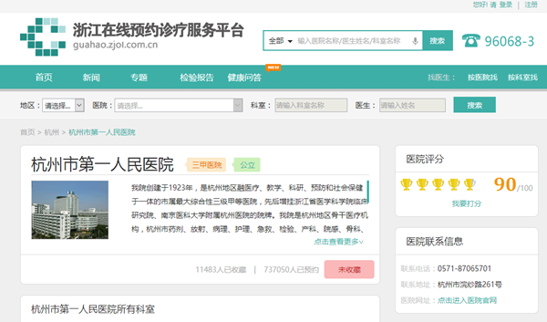

迪因特-中国互联网软件开发商!
微信

服务热线：400-101-1370
一直以来，挂号难、见专家难、反复排队、复诊来回奔波……看病难一直都是困扰老百姓健康生活的一大难题。那么，如何通过APP等互联网手段解决问题呢？互联网+医疗又是如何成为新医疗模式下的新型产物的呢？
近期，在互联网+医疗大潮下，这个难题在浙江各个地区正逐步改善。浙江地区不仅涌现出以乌镇互联网医院为代表的创新性云医院，竟然，连传统医院也积极拥抱互联网并结出丰硕成果，再加上覆盖全省的预约诊疗服务平台的升级和完善，全民共享的健康浙江阳光正在照进现实。
全新模式互联网医院
互联网模式下，一切皆有可能，患者足不出户就能完成整个诊疗过程，给你看病的医生是各个领域的一流专家。这样的一家医院是不是很令人期待，在乌镇互联网医院，这个美梦已经成真。
在浙江乌镇，子夜路上有一幢由羊绒厂改造而来的传统4层楼建筑。悬于大门上方的乌镇互联网医院匾额，让这幢江南小镇上再平常不过的老房子一时成为公众关注的焦点。真正的乌镇互联网医院其实在网上，只要有互联网就可以享受乌镇互联网医院的服务。在张群华看来，诊疗行为的许多流程都可以在线上完成。比如，病人可以完成挂号、预诊，根据病情，再找到对口的医生，到线下进行面诊，接着将检查检验、诊断结果传回到线上，最后由线上完成复诊，而且会诊、转诊也不是问题。

另外，在乌镇互联网医院，医生和医生、医生和患者无须面对面，通过网络视频即可完成诊疗的过程，包括开具电子处方和配药。乌镇互联网医院院长张群华向媒体表示。如今，乌镇互联网医院已经连接了全国1900多家重点医院、22万名重点医院专家。央视新闻频道《新闻周刊》评论说，它是互联网促进医疗服务效率提升的标杆和典范。
大家都知道，民以食为天，那么，除以民间力量推动的乌镇互联网医院外，由政府部门主导的云医院也在茁壮成长着。去年9月的时候，宁波市在全国率先启动建设宁波云医院。
足不出户把病看
这家互联网+医院正是以建设互联网的医联体为目标，通过在互联网上打造无边界、无围墙的医院，为老百姓提供无处不在的个性化健康服务，为医生提供线上线下多点执业的平台，充分释放医务人员的生产力，放大优质医疗服务资源。
另外，立三甲医院线上院区，该院12个科室的124位专家在浙大一院互联网医院上等待患者。患者通过手机、iPad、个人电脑，无论身处何处，只要手指点点，可以与专家名医面对面远程门诊，预约检查等，患者也可以坐等药物送到家里。为了突破医保网上支付难题，让患者看病付费不用排队，浙江大学医学院附属邵逸夫医院还成为全国第一家移动支付试点医院，连医保都可以用手机支付。
迪因特获知，在近期已开始在市一医院、市妇产科医院进行了先行院内试运行上线,试运行半个月以来,已有近200人开通了医信付功能,使用信用消费逾百笔,免去了患者诊间结算余额不足的烦恼。这也是互联网+医疗正在成为新医疗模式下的新型产物的又一佐证。
该项互联网+服务以市民卡为载体,打造市民诚信卡,落地杭州信用惠民政策,是征信业务在民生热点场景中的重要尝试,在缓解就医难问题上又迈出坚实一步。
气质如此，互联网+医疗的探索并不局限于大城市，如今，哪怕居住在最偏远海岛的患者，也能享受到远程网络诊治。舟山市卫生计生局副局长胡本祥告诉记者，对于这个岛屿分散的群岛型城市来说，远程门诊采用B2B(机构对机构)模式，即在基层医生的陪同下，岛上居民只需通过视频就能获得三甲医院专家的诊疗。
为深化智慧医疗应用建设,进一步提高服务的便捷性,全面提升杭州城市国际化水平,并结合信用杭州,推动社会诚信建设在医疗健康领域的创新应用,市卫生计生委、市发改委(市信用办)联合杭州市民卡有限公司推出智慧医疗信用支付(以下简称医信付)服务。
市一医院、市妇产科医院于今年10月1日率先上线试运行。试运行半个月以来，已有近200人开通了医信付功能，使用信用消费逾百笔，受到市民点赞。10月20日起，医信付功能即在市一、市二、市三、市肿瘤医院、市红会医院、市西溪医院、市七医院、市中医院、市妇产科医院、市老年病医院10家市属医院全面推出。
我们相信不久的将来，国内会有越来越多的互联网+医院，更好地为民众服务！互联网+医疗正在成为新医疗模式下的新型产物。


 2016-11-07
2016-11-07  在线咨询
在线咨询 联系我们
联系我们